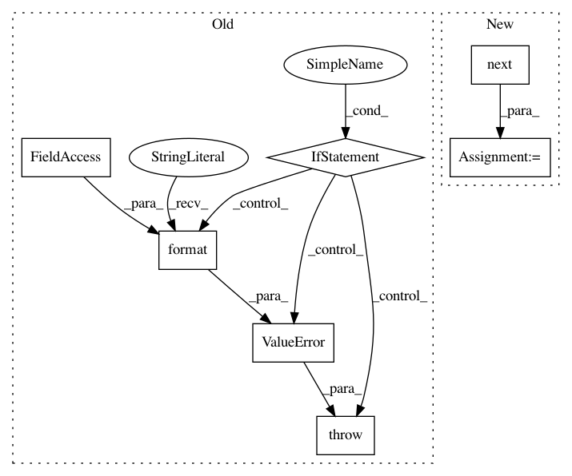

bf49375b5f60b5668f874a2f704fa718735e2ded,features/eolearn/features/interpolation.py,InterpolationTask,execute,#InterpolationTask#Any#,178
Before Change
def execute(self, eopatch):
Execute method that processes EOPatch and returns EOPatch
if self.feature_name not in eopatch[self.feature_type.value]:
raise ValueError("Feature {0} not found in {1}.".format(self.feature_name, self.feature_type))
// Make a copy not to change original numpy array
feature_data = eopatch[self.feature_type.value][self.feature_name].copy()
time_num, height, width, band_num = feature_data.shape
// Prepare mask of valid data
After Change
// Prepare mask of valid data
if self.mask_feature:
mask_type, mask_name = next(self.mask_feature(eopatch))
invalid_data = ~eopatch[mask_type][mask_name].squeeze()
feature_data[invalid_data, :] = np.nan
// Flatten array
In pattern: SUPERPATTERN
Frequency: 3
Non-data size: 7
Instances
Project Name: sentinel-hub/eo-learn
Commit Name: bf49375b5f60b5668f874a2f704fa718735e2ded
Time: 2018-08-08
Author: matej.aleksandrov@sinergise.com
File Name: features/eolearn/features/interpolation.py
Class Name: InterpolationTask
Method Name: execute
Project Name: sentinel-hub/eo-learn
Commit Name: 5bb91bfefafbf9cc643aa1a3c7c4d8fdfec46e56
Time: 2018-08-08
Author: matej.aleksandrov@sinergise.com
File Name: ml_tools/eolearn/ml_tools/postprocessing.py
Class Name: PostprocessingTask
Method Name: execute
Project Name: tryolabs/luminoth
Commit Name: fbcbb710c465da13ed6705fb8d904fe2795b246a
Time: 2018-02-08
Author: agustin@tryolabs.com
File Name: luminoth/models/base/truncated_base_network.py
Class Name: TruncatedBaseNetwork
Method Name: get_trainable_vars